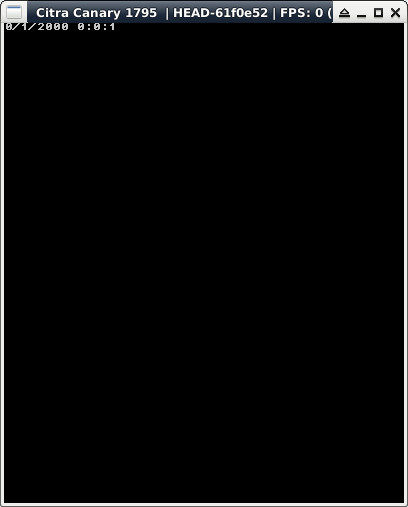

參考資訊：
https://hub.docker.com/r/greatwizard/devkitarm-3ds
main.c
#include <stdio.h>
#include <time.h>
#include <3ds.h>
int main(void)
{
time_t unixTime = time(NULL);
gfxInitDefault();
consoleInit(GFX_TOP, NULL);
struct tm *timeStruct = gmtime((const time_t *)&unixTime);
printf("%d/%d/%d %d:%d:%d\n",
timeStruct->tm_mon, timeStruct->tm_mday, timeStruct->tm_year + 1900,
timeStruct->tm_hour, timeStruct->tm_min, timeStruct->tm_sec);
gspWaitForVBlank();
gfxSwapBuffers();
svcSleepThread(3000000000LL);
gfxExit();
return 0;
}
完成
